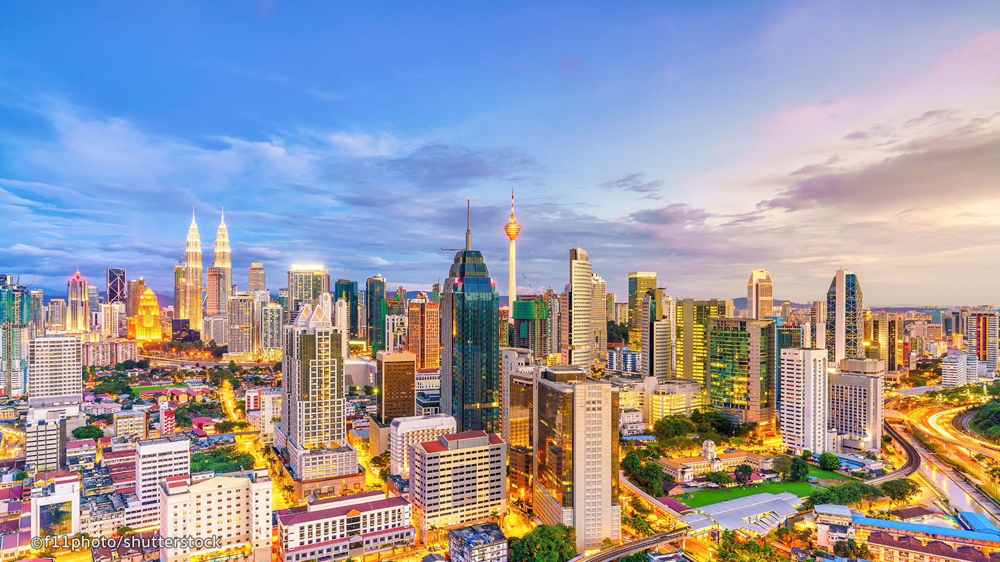

Cities

-
Kuala Lumpur
Kuala Lumpur is the capital city of Malaysia and the city with the largest population density. It is a mix of colonial architecture and moderncity skylines.
-
George Town

George Town is a Unesco World Heritage site. It is the second largest city in Malaysia. A mix of skyscrapers, temples and mosques are scattered among its often narrow streets.
-
Kuala Terengganu

Kuala Terengganu is the last remaining royal capital to retain it's royal state name. It is a large tourist destination as well as a major economic and political center.
Landmarks

-
Batu Caves

Batu Caves is a popular Hindu shrine. A limestone hill near Kuala Lumpur riddled with caves, some which have been converted into Hindu Shrines. "Batu" is a Malay word meaning rock.
-
Mount Kinabalu

Mount Kinabulu is the highest peak in Malaysia at 13,455 feet. The area is known for its biological diversity and is a popular destination for hikers.
-
Kek Lok Tong Cave and Zen Gardens

Kek Lok Tong Cave is another limestone cave that is filled with beautiful natural formations and stone carvings that create a temple. It is surrounded by beautiful gardens and a pond. Located near Ipoh.
People

-
Michelle Yeoh

Michelle Yeoh is a Malaysian actress who has starred in the James Bond Film Tomorrow Never Diesin addition to Crouching Tiger Hidden Dragon.
-
Amber Chia

Amber Chia is a Malysian actress and model. She started her own modeling school and is recognized internationally as a model, actress and business woman.
-
Jimmy Choo

Jimmy Choo is a fashion designer famous for his own brand of women's shoes. He currently lives in London and was awarded an OBE which is the Order of the British Empire.